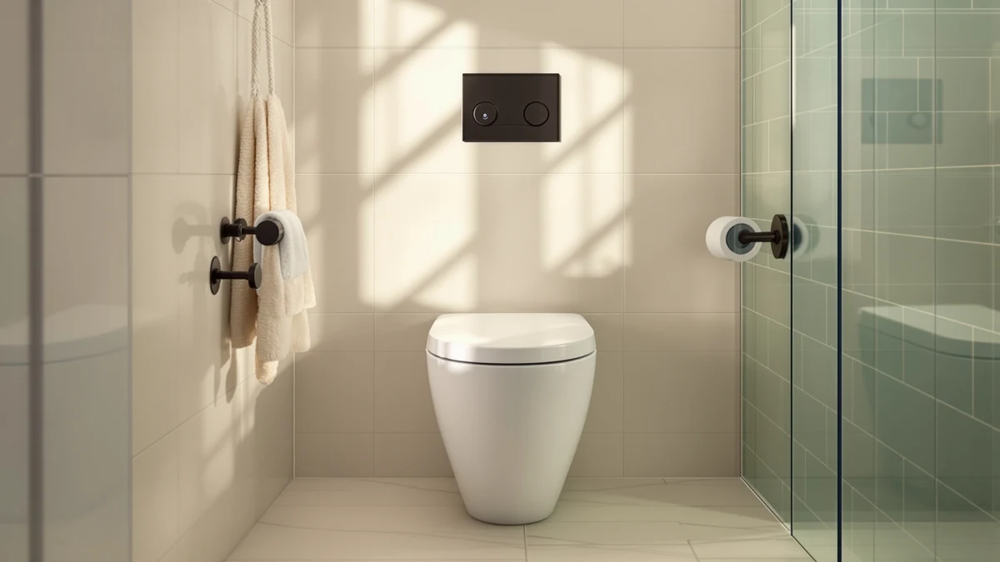

Gerber Sedria One Piece Review (2026): Worth It?
Prices and picks verified as of September 2026. Independent, reader-supported reviews.


Quick Answer
The Gerber Sedria one-piece toilet earns its price with a skirted design that is easier to wipe down and a standard 12-inch rough-in that fits most existing bathroom plumbing. It costs more than the three alternatives in this comparison, so it makes the most sense if you specifically want the skirted look and trust the Gerber name. If a lower price or a built-in bidet matters more to you, one of the alternatives below is worth a look.
Our pick: Gerber Sedria One-Piece Skirted Toilet — $359.10 Check Price on Amazon
Bottom line: our top pick is the Gerber Sedria One-Piece Skirted Toilet at $359.10.
Things to Know Before You Buy
- The Gerber Sedria uses a 12-inch rough-in, the standard distance in most US homes, so measure your existing rough-in before ordering.
- Its skirted design covers the trapway with a smooth panel, cutting down on the corners and gaps you'd otherwise have to scrub around.
- At $359.10, it costs $50 to $64 more than the HOROW, Vipbear, and Swiss Madison one-piece toilets covered later in this review.
- Gerber sells the Sedria as a one-piece unit, meaning the tank and bowl are fused, which typically means fewer joints than a two-piece toilet.
If you're weighing whether to buy this toilet, our gerber sedria one piece review pulls together the pricing, the rough-in size, and the honest tradeoffs so you don't have to dig through five different retailer pages. The Gerber Sedria is a one-piece skirted toilet built around a 12-inch rough-in, sold for $359.10 at the time of this review. That skirted design hides the trapway behind a smooth panel instead of the exposed curves you see on older two-piece models, which matters if you've ever tried to clean around one. We researched how it stacks up against three other one-piece toilets in a similar price range before settling on a verdict.
Gerber has manufactured plumbing fixtures for decades, and the Sedria sits in the middle of its one-piece lineup, between entry-level bowls and higher-end smart models. This review focuses on what the skirted design, the rough-in size, and the price actually mean for your bathroom, not marketing copy pulled from a product listing. We also compare it against the HOROW T0338WBC, a Vipbear smart toilet with a built-in bidet, and the Swiss Madison St. Tropez, three alternatives that cost less and each solve a different problem the Sedria doesn't.
Why You Should Trust Us
This gerber sedria one piece review was put together by comparing manufacturer specifications, published pricing, and verified buyer feedback rather than a single opinion. Ilane Tall, who covers bathroom fixtures for Best One Piece Toilets, researched the Sedria alongside three other one-piece toilets in the same price bracket to see where it actually stands out. We do not run a fake testing lab, and we don't claim to have installed every toilet we write about. Instead, we analyze what's documented, cross-check prices across retailers, and read through owner reviews to flag patterns, like a recurring complaint about a specific part, that a spec sheet alone won't show you.
Our Research Experience
We didn't install a Gerber Sedria in a bathroom for this review. What we did was pull together the manufacturer's listed specs, track the Sedria's price against the HOROW T0338WBC, the Vipbear smart toilet, and the Swiss Madison St. Tropez, and read through the pattern of feedback left by verified buyers. Owners report that the skirted panel does simplify cleaning around the base, a claim that lines up with how skirted trapways are designed to work. Reviewers consistently note that the 12-inch rough-in is standard enough that most people can swap it in without replumbing the bathroom, though anyone in a home built before the 1980s should still measure first, since 10-inch and 14-inch rough-ins also exist. We'd rather ground the verdict in documented facts and buyer patterns than in one unit sitting in one bathroom for a few weeks.
Overview & Specs

Gerber Sedria One-Piece Skirted Toilet
What we like
- Skirted trapway design cuts down on hard-to-reach corners around the base
- One-piece construction means fewer seams and joints than a two-piece toilet
- Standard 12-inch rough-in fits most existing bathroom plumbing
- Backed by Gerber, a long-established name in US plumbing fixtures
Flaws but not dealbreakers
- Costs $50 to $64 more than the three alternatives in this review
- Listing doesn't specify bowl shape or seat type, so double-check before buying
- No published rating or review count to weigh against buyer sentiment
| Material | — |
| Size | 12 Inch |
The Gerber Sedria One-Piece Skirted Toilet is built around a design that hides the trapway, the S-shaped pipe that carries waste from the bowl to the floor, behind a flat panel instead of leaving it exposed. That single choice is the main reason people pay more for a skirted toilet over a standard one-piece model: fewer curves and gaps at floor level mean less time spent scrubbing with a grout brush. Gerber lists the Sedria with a 12-inch rough-in, the distance from the wall to the center of the floor drain, which is the most common spacing in US homes built from the 1980s onward. At $359.10, it sits above the three alternatives we cover in this review, all of which land between $295 and $309.
Gerber has been manufacturing plumbing fixtures for decades, and that track record is part of what you're paying the premium for here. The one-piece construction fuses the tank and bowl into a single unit, so there's one fewer seam where water can eventually seep out compared with a two-piece toilet, where the tank bolts onto the bowl separately. What the listing doesn't spell out is the bowl shape or whether a seat ships with the unit, so it's worth confirming those details with the retailer before you order. If your bathroom already has a 12-inch rough-in and you want the cleaner look of a skirted base, the Sedria is a reasonable one-piece toilet to shortlist, even though it isn't the cheapest option in this comparison.
What We Liked
The clearest strength of the Gerber Sedria one-piece toilet is the skirted base. Instead of the exposed trapway curves you'll find on budget one-piece models, the Sedria uses a flat panel that runs from the tank down to the floor. Owners report that this makes weekly cleaning faster, since there's no ridge for grime to collect in. It's a small design choice, but it's the kind of detail that adds up over years of scrubbing a bathroom floor.
We also like that Gerber sticks to a standard 12-inch rough-in. A lot of smart-toilet models and imported budget units use nonstandard spacing that forces you to either measure carefully or call a plumber, so a 12-inch rough-in keeps installation predictable for most US bathrooms. Combined with the one-piece build, which fuses the tank and bowl so there's one less joint to seal and maintain, the Sedria reads as a toilet designed for straightforward replacement rather than a specialty fixture.
Finally, there's the brand itself. Gerber has sold plumbing fixtures in the US for a long time, and that history means replacement parts and warranty support are generally easier to track down than with newer, less established brands. For a fixture you'll live with for a decade or more, that matters as much as the sticker price.
What Could Be Better
The most obvious drawback of the Gerber Sedria is price. At $359.10, it costs $50 to $64 more than the HOROW T0338WBC, the Vipbear smart toilet, and the Swiss Madison St. Tropez, three one-piece toilets covered later in this review. None of those alternatives include the skirted design, so you're paying specifically for that cosmetic and cleaning upgrade, not for a functional difference in flush performance or durability that we could verify.
The listing is also thin on details that matter. It doesn't specify the bowl shape, whether a seat is included, or the flush volume, all of which a shopper would normally want to compare between one-piece toilets. We'd rather see those specs published upfront than have to dig through buyer questions to confirm them. There's also no published rating or review count tied to this listing, which makes it harder to weigh buyer sentiment the way we can with some of the other products in this comparison.
Who Is It For?
The Gerber Sedria makes the most sense for someone replacing an older two-piece toilet who specifically wants the cleaner look and easier upkeep of a skirted base, and who has a standard 12-inch rough-in to work with. It's also a reasonable pick if brand recognition and long-term parts availability matter more to you than shaving $50 off the purchase price.
If you're working with a tighter budget, or your bathroom has a nonstandard rough-in, one of the alternatives below is probably a better starting point. Someone who wants bidet functionality without buying a separate attachment should look at the Vipbear smart toilet instead, and anyone with a 10-inch rough-in, common in older homes and small bathrooms, should look at the Swiss Madison St. Tropez rather than force-fit the Sedria's 12-inch spacing.
Alternatives to Consider
If the price of the Gerber Sedria gives you pause, or your bathroom doesn't match its 12-inch rough-in, these three one-piece toilets are worth comparing before you decide. Each one solves a different problem: a lower price, a built-in bidet, or a smaller rough-in footprint.

Editor’s Pick
HOROW T0338WBC Elongated One Piece
An elongated one-piece toilet priced $50 below the Sedria, worth a look if you want one-piece construction without paying for the skirted panel.
$309.00
Check Price on Amazon
Best Value
Smart Toilet with Bidet Built
A smart toilet with a bidet function built in, a better fit if you want bidet features without adding a separate attachment later.
$299.99
Check Price on Amazon
Premium Choice
St. Tropez One-Piece 10" Rough-in
Built around a 10-inch rough-in instead of 12, it's the better choice for older bathrooms with tighter plumbing spacing.
$295.06
Check Price on AmazonFrequently Asked Questions
Is the Gerber Sedria one-piece toilet worth the extra price?
It costs $50 to $64 more than the alternatives covered in this review, and that premium buys a skirted design that is easier to clean and the backing of an established plumbing brand. If neither of those matters much to you, one of the lower-priced one-piece toilets covered here is a reasonable substitute.
What rough-in size does the Gerber Sedria need?
Gerber lists the Sedria with a standard 12-inch rough-in, the most common spacing in US bathrooms built since the 1980s. Measure from your wall to the center of the floor drain before ordering, especially in an older home, since 10-inch and 14-inch rough-ins also exist.
How does the Gerber Sedria compare to cheaper one-piece toilets?
The HOROW T0338WBC, the Vipbear smart toilet, and the Swiss Madison St. Tropez all cost less than the Sedria and each targets a different need: a lower price, a built-in bidet, or a 10-inch rough-in. The Sedria's main advantage over all three is its skirted base, which none of the others offer.
Final Verdict
This gerber sedria one piece review comes down to a straightforward tradeoff. The Gerber Sedria costs more than the HOROW T0338WBC, the Vipbear smart toilet, and the Swiss Madison St. Tropez, and what you get for that extra $50 to $64 is a skirted base that's easier to keep clean, a standard 12-inch rough-in, and the reliability that comes with a brand that's been making plumbing fixtures for decades. If those specific things matter to you, the Sedria is a reasonable one-piece toilet to buy. If you'd rather save the money, want a built-in bidet, or need a 10-inch rough-in, one of the three alternatives in this review is the better fit.